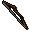

West Ardougne General Store
Inventory config
upassgeneralshopRun by  chadwell. Open in knowledge graph →
chadwell. Open in knowledge graph →
Located in: Underground Pass
Stock
| Item | Stock | Value | Sells for |
|---|---|---|---|
| 3 | 1 gp | 1 gp | |
| 3 | 18 gp | 21 gp | |
| 2 | 1 gp | 1 gp | |
| 2 | 2 gp | 2 gp | |
| 2 | |||
| 3 | |||
| 2 | 6 gp | 7 gp | |
 Longbow | 2 | 80 gp | 96 gp |
| 20 | 1 gp | 1 gp | |
| 10 | 50 gp | 60 gp | |
| 10 | 15 gp | 18 gp | |
| 5 | 12 gp | 14 gp | |
| 10 | 4 gp | 4 gp |
Shop sells at 120.0% of item value and buys at 55.0%.
This is a general store: it accepts any tradeable item.